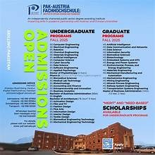

PAF-IAST Official Website
Project Documentation & Functional Overview
1. Project Overview
The Pak-Austria Fachhochschule: Institute of Applied Sciences and Technology (PAF-IAST) website is a modern, responsive, and aesthetically premium platform designed to represent the institute's global vision and collaborative excellence. The site utilizes a Glassmorphism design language to convey innovation and cutting-edge technology.
Live URL: https://hamzakhankkk.github.io/paf-iast-website/
GitHub Repository: github.com/hamzakhankkk/paf-iast-website
2. Visual Design & Aesthetics
Premium Glassmorphism
Uses semi-transparent layers with backdrop blurring and subtle borders to create a futuristic feel.
Dynamic Layouts
Fully responsive design that adapts seamlessly from desktop to mobile screens.
3. Key Modules & Functional Outputs
Hero Section (Identity)
Features the institutional logo in the corner and a high-resolution campus background image with the "Skilling Pakistan" slogan.
Admission Section
Direct interaction with the Admissions 2025 brochure. Users can view and download the brochure directly from the page.
Featured Highlight
Showcases the historic Inauguration by Imran Khan, emphasizing the national importance of the institute.
University Projects
Displays the "State of the Art" infrastructure and vision for the campus development.

4. Technical Specifications
- Frontend: HTML5, CSS3, ES6 JavaScript.
- Styling: Custom CSS with CSS Variables and Flexbox/Grid.
- Icons: FontAwesome integration for intuitive navigation.
- Typography: Google Fonts (Inter) for maximum readability.
- Deployment: Continuous Integration via GitHub Pages.